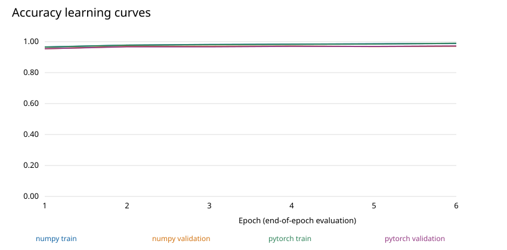
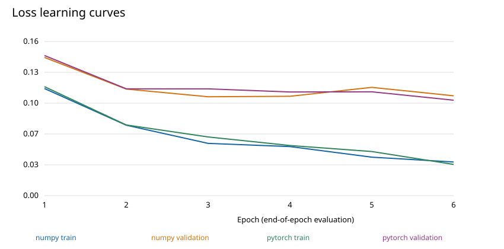
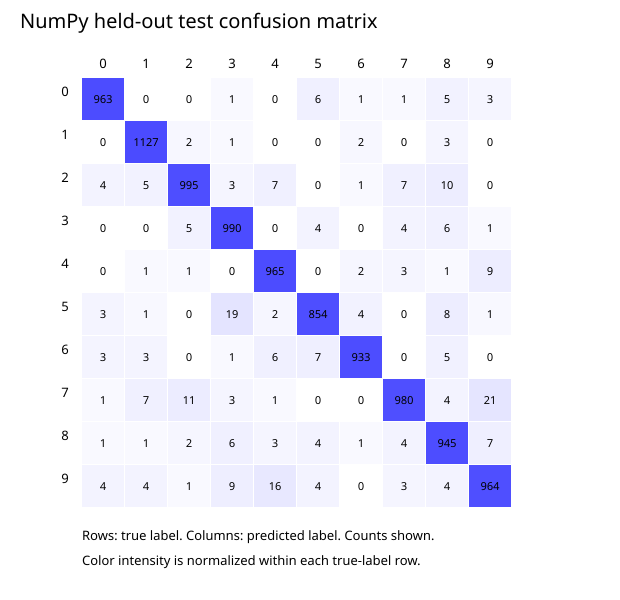
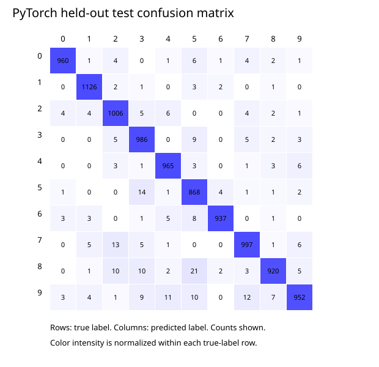
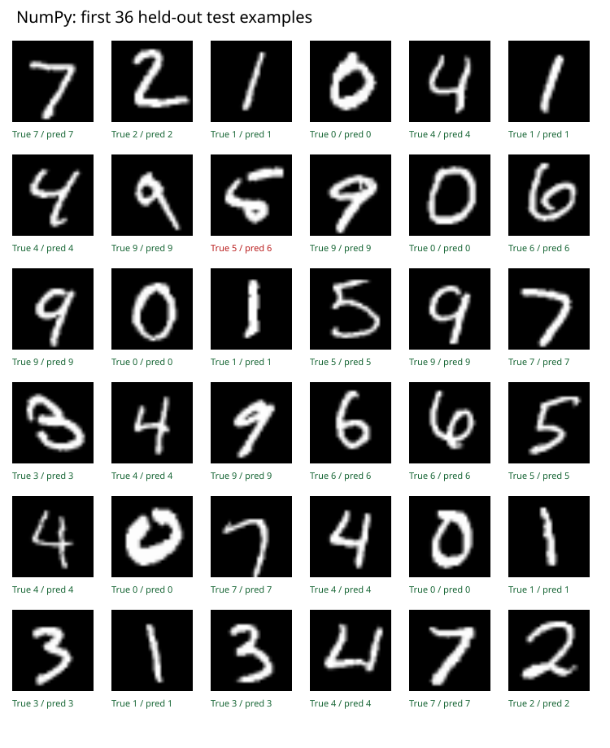

784 → 128 → 64 → 10; CPU, float32; 50,000 training / 10,000 validation / 10,000 test examples. Validation loss selects the checkpoint. Test labels never enter training.
| Implementation | Selected epoch | Train accuracy | Validation accuracy | Test accuracy | Test loss | Training seconds |
|---|---|---|---|---|---|---|
| numpy | 3 | 98.20% | 96.95% | 97.16% | 0.0906 | 1.15 |
| pytorch | 6 | 98.98% | 97.19% | 97.17% | 0.0956 | 1.06 |
One seeded run; no confidence intervals or general speedup claim. See metrics.json and README for timing boundaries and limitations.




